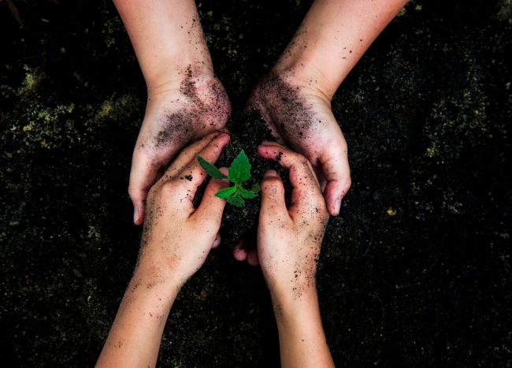
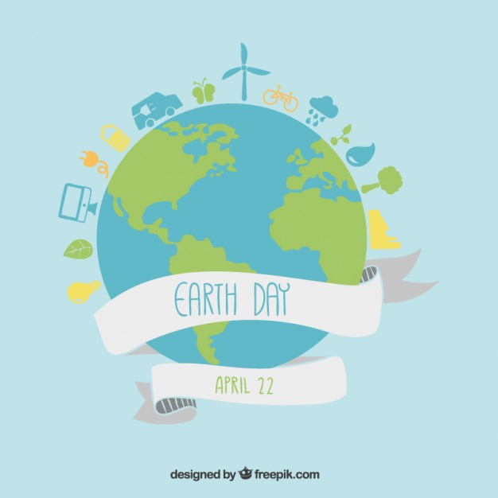
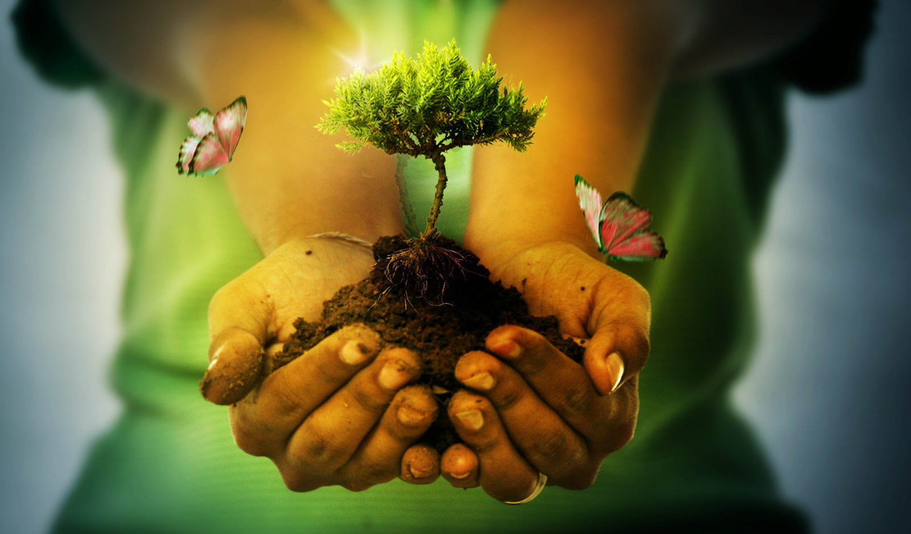
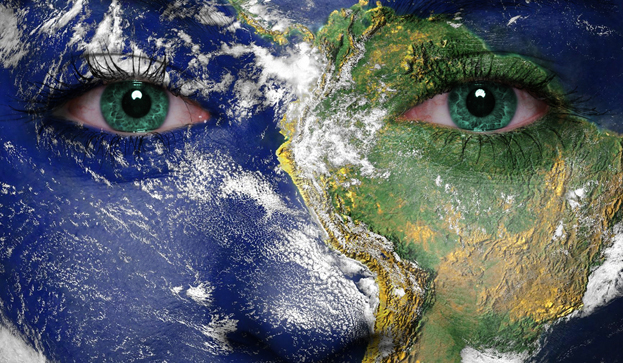

Dia Internacional de la madre tierra 22 de Abril

- 
- 
- 
Realizado por:
Ximena Contreras Hernandez
4 "E"
Especialidad:
Programacion
Submodulo
Desarrolla Aplicaciones Moviles
Docente:
Lic.Jose Antonio Gomez Hernandez
4 "E"
Programacion
Desarrolla Aplicaciones Moviles
Lic.Jose Antonio Gomez Hernandez
Celebramos el Dia Internacional de la Madre Tierra para recordar que el planeta y sus ecisistemas nos dan la vida y el sustento. Con este dia, asumimos ademas, la responsabilidad colectiva, como nos recordaba la Declaracion de Rio de 1992, de fomentar esta armonia con la naturaleza y la Madre Tierra. Este dia nos brinda tamabien la oportunidad de concienciar a todos los habitantes del planeta acerca de los problemas que afectan a la tierra y a alas diferentes formas de vida que en el se desarrollan.

El origen de este día, celebrado mundialmente (aunque no en todas partes), se encuentra en Estados Unidos, durante los 70. Y está asociado, sin duda, a un nombre: Gaylord Nelson. La historia cuenta (a pesar de los curiosos rumores sobre Lenin) que fue este político quién aprovechó un miércoles para organizar una manifestación en defensa del medio ambiente y el ecologismo. Un momento muy estudiado y que venía cociéndose desde la década de los 60 debido a la creciente irresponsabilidad ambiental del gobierno de Estados Unidos. Ya habían gérmenes plantados desde la comunidad científica y estudiantil. Ese miércoles los estudiantes y trabajadores se unieron en una manifestación pacífica que pretendía rendir homenaje y mostrar la preocupación colectiva sobre temas como el medio ambiente, la superpoblación o la conservación de la biodiversidad.

El suelo que pisas, el aíre que respiras y todo lo que comes, bebes, tocas o hueles pertenecen al planeta en el que vives. El Día de la Tierra es la jornada mundialmente escogida para celebrar la existencia de nuestra casa; un feliz accidente que nos ha permitido elevarnos desde meras células primigenias hasta llegar a ser los monos pensantes que somos hoy día. Y da igual tu creencia, tu fe o tus valores. El Día Mundial de la Tierra es un día con 45 años de historia y que pretende perpetuarse por muchos más. Es muy importante que comprendamos qué hacemos en este mundo y cómo lo hacemos. Porque es el único que tenemos y toda nuestra vida, la única que poseemos, está ligada a este planeta. Por eso, el Día de la Tierra es un día que todos deberíamos de celebrar con un poco de conciencia.
“Cambiar el sistema, no el clima” es la consigna que recorre todo el mundo. Pero, ¿con que nuevo sistema vamos a cambiar el actual?, ¿qué nuevas alternativas se están construyendo desde lo local, lo nacional, lo regional y lo internacional frente al actual sistema de sobre consumo, derroche y mercantilización de todos los aspectos de la vida y la naturaleza? ¿Cuáles deben ser los principios fundamentales de ese “otro mundo posible y necesario”? ¿Qué características y como podemos construir un mundo que restablezca la armonía entre seres humanos y con la naturaleza para el vivir bien de toda la humanidad y nuestra madre tierra? Este Grupo de Trabajo tiene por objetivo pensar, recuperar, analizar y desarrollar las alternativas estructurales al sistema capitalista para promover soluciones de fondo al problema del cambio climático..
Nuestro juego no es sostenible, pues es destructor.Podemos incluso decir que la nocion de comunidad de vida se ha transformado en comunidad de muerte.
La cuestion que se plantea ahora es saber si una vida humana sin sufrimiento es posible y si podemos vivir sin que nosotros mismos nos causemos sufrimiento.Dicho de otra manera , provendia preguntarse si no es acaso nuestra propía vida la que frena la gran rueda cosmica